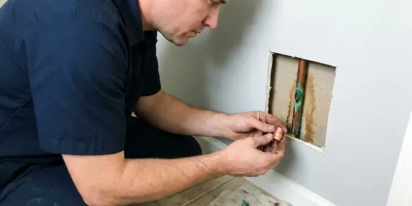

Plumbing Repair in Deming, NM
Want a plumber in Deming, NM who arrives when promised and explains the fix first? GVK Plumbing repairs leaks, drains, sewers and water heaters daily.
- Flat Price Before Work
- Workmanship Warranty
- Written Warranty on the Work
- Background-Checked Plumbers

Honest pricing and fast repair in Deming, NM.
Call now and a licensed plumber can usually be at your door the same day.
Plumbing Repair in Deming, NM Done Properly the First Time
GVK Plumbing plumbers in Deming, NM show up with fittings, gauges and a camera for most repairs. Patches are a last resort. Before we leave we want to know why the pipe failed in the first place, because high pressure or a bad joint will just cause the next leak.
Our expertise includes:
- Clear and repair drain and sewer lines
- Acoustic and thermal leak detection for slab and wall leaks
- Sewer camera inspection with a locator to mark breaks and roots

Additional Plumbing Repair Services in Deming, NM
We offer expert plumbing repair services across Deming, NM to fix leaks, restore flow, and keep your system running smoothly.


Customers
Why Choose GVK Plumbing for Plumbing Repair in Deming, NM?
Plumbing problems rarely wait for a convenient time, so we keep stocked trucks on the road and a plumber on call every night of the week. You get a straight answer. What failed, what it costs and how long the repair will last, all before we start.
- Stocked Trucks, Valves, cartridges, heater parts and pipe are on every truck, so most repairs finish in one visit.
- Real Testing, Cameras, thermal imaging and pressure tests find hidden problems without opening extra walls.
- Local Know-How, Our plumbers see shifting foundations and mineral scale in New Mexico homes every week.
Citywide Coverage
Older neighborhoods with galvanized and cast iron, new subdivisions plumbed in PEX, we repair plumbing in every part of Deming. Most of the time a plumber can reach you the same day.
Experienced Team
Pride in the trade shows up in small things, like a level water heater and a solder joint with no drip of flux running down the pipe. Crews at GVK Plumbing care about that. They diagnose quickly and follow safety rules on every call.
Safety-First Approach
Gas lines and pressurized water carry real risk during a repair. Our technicians follow the codes Deming and New Mexico enforce, with the right tools for each job.
Trusted Certified Deming Plumbing Services Professionals
At GVK Plumbing, we take pride in licensed, certified plumbing services throughout Deming, NM. Credentials matter in this trade. Every repair, install and maintenance visit follows strict safety and quality rules, and the plumbers doing the work carry recognized industry credentials.
Call Us Now PHCC Plumbing Contractor Recognition
PHCC Plumbing Contractor Recognition Better Business Bureau (BBB) Accreditation
Better Business Bureau (BBB) Accreditation Angi Certified Pro
Angi Certified Pro ISO 9001 Quality Management Certification
ISO 9001 Quality Management CertificationPlumbing Repair Work We Do in Deming, NM
Gas Line Leak Repair in Deming
Gas work is the one job no homeowner should try. Smell sulfur or hear hissing, and the right move is to walk out and call from the driveway. GVK Plumbing handles emergency gas leak detection and repair in Deming with a combustible gas detector, then pressure tests the line to code before the meter is turned back on. Flex connectors fail most often.

Water Softener Repair in Deming, NM
Water across New Mexico is generally hard and mineral-heavy, so scale accumulates quickly in water heaters, faucets and appliance valves. White crust on faucets and spotty glasses are the first signs a softener has stopped working. Most of the time it is a salt bridge or a plugged injector. GVK Plumbing repairs the common brands and tests the water hardness before and after the fix so you know it is working again. Resin lasts ten to fifteen years.
Under-Slab Leak Repair in Deming, NM
Housing in New Mexico ranges from historic adobe homes to newer stucco subdivisions, and plumbing materials vary just as widely. Copper or PEX under the slab lasts a long time until a fitting or a rubbed spot gives out. We find the leak with acoustic and thermal equipment, then lay out the repair options side by side with a price for each. Epoxy lining is one choice. A reroute through the attic or walls is often the cleaner one.
Gas Pipe Repair in Deming, NM
Leave the house first if you smell gas, and call the gas utility from outside. After the utility makes it safe, we come in for the repair. We pressure test the system, track the leak with an electronic detector and soap solution, and replace failed flex connectors, shutoff valves or corroded steel pipe. Nothing is relit until the test holds.
Drain and Pipe Repair in Deming
Hydro-jetting at around 4,000 psi clears grease and scale that a cable snake only pokes a small hole through, which is why the clog keeps coming back. GVK Plumbing follows every jetting job with a camera so you can see whether the pipe is sound. Damaged sections get cut out and replaced in whatever material matches the line. Jetting alone will not fix a broken pipe.
Slow Drain Repair in Deming
Gurgling toilets and a tub that drains slow often trace to a blocked vent or a sagging drain line. After clearing it, we camera the line and fix whatever is broken. Common fixes include replacing corroded cast iron, cutting out failed ABS joints, rebuilding a broken trap arm and resetting toilets on a new wax ring and flange. The goal is a drain you stop thinking about.
Well Pump Service in Deming, NM
Submersible pumps sit well below the water line, so diagnosis happens at the surface first. GVK Plumbing checks the pressure switch, the control box capacitor and the tank precharge, then measures amp draw on the motor. A pump drawing high amps is wearing out. Jet pumps are simpler, and most of the time a bad foot valve or a lost prime is to blame.

Sewer Pipe Repair in Deming, NM
Clay and Orangeburg laterals crack and separate as the ground shifts, and roots find those gaps within a season or two. We camera the line and mark the depth and location of the problem on the surface. Repair options run from a traditional dig to pipe bursting or a cured-in-place liner. We camera it again before backfilling.
Plumbing Repair Near Me in Deming, NM
Neighbors in Deming call us about a weeping water heater or a toilet that will not stop running more than anything else. We fix those in homes across New Mexico every week. Fill valves and heater parts are already on board.
Older neighborhoods and new subdivisions in Deming have different plumbing. Housing in New Mexico ranges from historic adobe homes to newer stucco subdivisions, and plumbing materials vary just as widely. The calls we run most are roots in the sewer and scale in the valves. We pick repair materials for the house in front of us, so a 1960s cast iron stack does not get the same fix as a 2015 PEX manifold. The right fitting matters.
GVK Plumbing at a Glance
- Licensed and insured plumbers serving Deming, NM
- Same-day appointments and 24/7 emergency response
- Clear written estimates, no hidden fees
- 4.8-star rated by 320+ New Mexico customers
Deming Map
Deming Information
- Population
- 14,603
- Area codes
- Local
- Service area
- Deming and towns within a 40 mile drive
- Nearby
- Las Cruces, Sunland Park, Chaparral, Alamogordo
Caliche, a hard, cement-like soil layer, is common in New Mexico and can make digging for sewer and water line repairs slow work. Ground movement pulls at buried supply and sewer lines in Deming, NM, and scale collects in valves at the same time. Catching both early keeps a small repair small.
Expert Services
Reach out to GVK Plumbing for honest, reliable plumbing from people who know the trade in Deming, NM.
Our Specialized Plumbing Services in Deming, NM
At GVK Plumbing, we handle the full list of plumbing services across Deming, NM. We go from leak detection all the way to full system installations, for homes and commercial buildings, and we do it quickly at a fair price. Explore our core services below:


Our Plumbing Repair Process in Deming, NM
GVK Plumbing keeps the repair process simple for Deming customers. The price is settled before any work.
Request a Quote
Call (505) 581-4975 or fill out the online form and describe the problem. We book a time that works for you.
Diagnosis & Estimate
A licensed plumber comes to your Deming home, tracks down the cause and gives you a written price. Nothing starts until you approve it.
Repair and Test
We make the repair with quality parts built to local code. The fix is tested before we pack up.
Frequently Asked Questions About Plumbing Repair in Deming
Price depends on the part and the access. Small fixture repairs, like a cartridge or fill valve, tend to land between $150 and $350. Slab leaks and sewer line replacements are a different scale, often several thousand dollars once excavation or rerouting is involved. You get a written number after diagnosis.
Fast. GVK Plumbing runs emergency repair in Deming around the clock, usually putting a plumber at the door within a few hours on urgent calls.
Dripping faucets and drains that stay slow are the easy ones to spot. Harder to ignore are gurgling toilets, damp drywall and a water bill that jumps without explanation. Sewer odor from a drain counts too.
Age and water pressure cause most of them. The rest usually trace to corrosion from the water or soil, or to a foundation that moves and pulls on the pipe. Caliche, a hard, cement-like soil layer, is common in New Mexico and can make digging for sewer and water line repairs slow work. Over time, that movement cracks buried pipe at its weakest fittings.
Swapping an aerator, a flapper or a showerhead is a reasonable DIY job. Gas lines, water heaters, slab leaks and sewer lines carry safety and code requirements, so leave those to a licensed plumber.
Moen, Delta, Kohler and American Standard on the fixture side, plus Rheem, Bradford White, Navien and Rinnai on the heater side. We stock common parts for each.
Small like-for-like repairs usually do not. Water heater replacements, gas line work, sewer replacements and repipes often need one from your city or county, and we file it for you.
Old galvanized pipe and thin-wall copper are the usual suspects, along with corrosion, high pressure and damage from renovations. Even in milder parts of the state, clear winter nights can drop below freezing, so outdoor spigots and evaporative cooler lines need draining each fall. Our plumbers repair the break and look for the cause behind it.
What People Are Saying About Our Plumbing Experts?

Emily R.
The shutoff valve under our kitchen sink snapped off in my hand on a Sunday morning. GVK Plumbing had someone out by early afternoon. He replaced both angle stops with quarter turn valves and showed me where our main shutoff was, which I honestly did not know.
Plumbing Repair · Alamogordo, NM
Diane F.
My kitchen faucet had dripped for months and I finally got tired of hearing it at night. GVK Plumbing came out the next morning, replaced the cartridge and the O rings, and tightened a loose base that was letting water under the sink.
Faucet Repair · Sunland Park, NMPatricia H.
We had a slab leak that two other companies could not find. GVK Plumbing located it in under an hour with a listening device. They rerouted the line through the attic instead of breaking up the floor, so we kept our kitchen tile.
Slab Leak Repair · Deming, NM
Kevin O.
Before buying our house I paid for a sewer camera inspection. GVK Plumbing found a belly in the line that held standing water about forty feet from the cleanout. We used the video to get the sellers to fix it before closing.
Sewer Camera Inspection · Los Lunas, NM
Paul B.
Our pit pump ran nonstop even in dry weather. The plumber found the check valve was stuck open, so the same water kept cycling back into the pit. New valve, new float switch, done in an hour. It runs quiet now.
Sump Pump · Chaparral, NM
Daniel K.
A pipe burst in the garage ceiling at 11 at night. Someone answered on the second ring, and the plumber was in my driveway about fifty minutes later. He shut off the main, cut out the split section, and had water back on before 2 am.
Emergency Plumbing · Los Lunas, NM